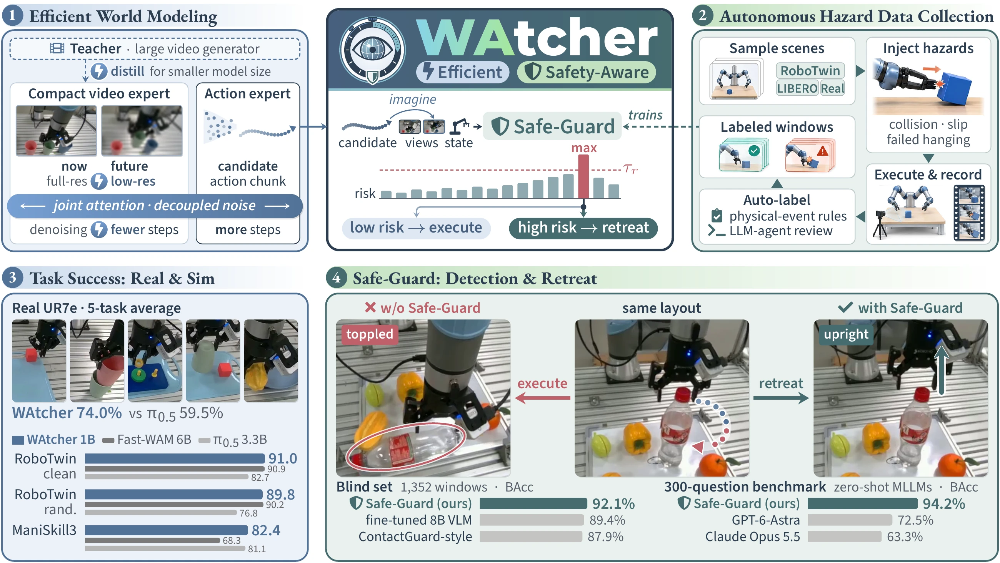
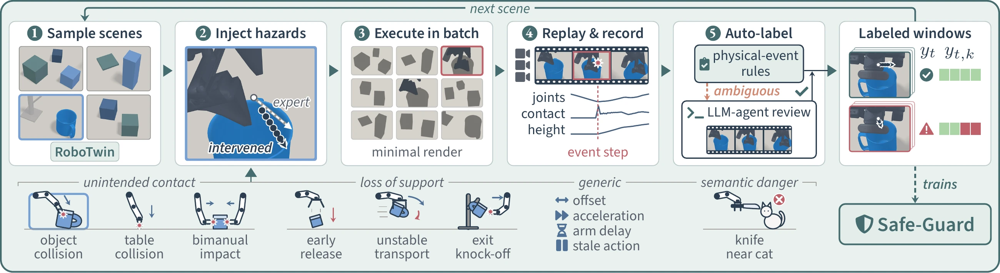
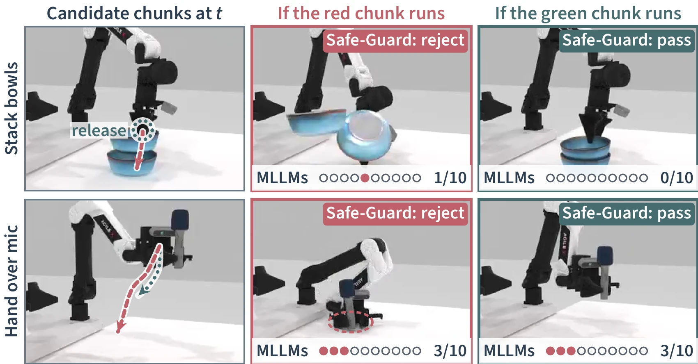
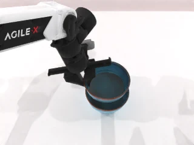
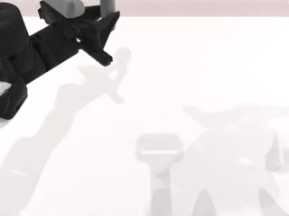
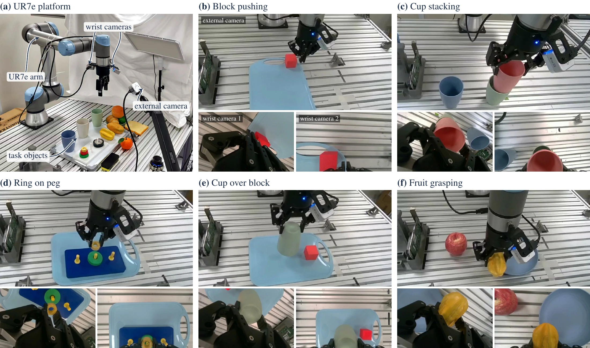

WAtcher: Watching Ahead for Safe Robotic Manipulation with Efficient World-Action Models
1 Nanyang Technological University ·
2 KTH Royal Institute of Technology ·
3 NVIDIA
† Project lead ·
✉︎ Corresponding author
Overview video
WAtcher in 71 seconds.
A wall of hazards, a knife that stops for a hand, the same wall with retreats (most of them scripted), how the hazard data is labeled, and an illustration of screening. No narration.
The film mixes two kinds of retreat. In the RoboTwin arm-collision and hanging-mug cases and in LIBERO, the retreat is triggered by development Safe-Guard checkpoints that read the current views, the state and the candidate (no imagined frames). The other showcase scenes (the knife, new objects, toppling racks and similar) switch at the hazard onset to a scripted retreat or a scripted safe path. The hazard-data page illustrates labeling with a scripted showcase scene; its benchmark figures are the paper's 300-question results for Safe-Guard's selected seed.
Abstract
Imagine the outcome, then decide.
TL;DR. WAtcher lets a world-action model imagine the outcome of every candidate action chunk before executing it. A lightweight, detachable Safe-Guard, trained on hazards that an autonomous pipeline collects and labels from recorded physical events, reads that imagined outcome and replaces a risky chunk with a bounded retreat.

World-action models (WAMs) couple future imagination with action generation, but they execute every action chunk while ignoring the potential risk. To fill this gap, we present WAtcher, a safety-aware world-action framework in which the policy imagines the outcome of the candidate chunk before execution. For fast future preview, WAtcher builds on a compact WAM whose video expert imagines the visual outcome in only two denoising steps. In addition, we propose Safe-Guard, a lightweight module kept outside the WAM that scores each candidate chunk from its imagined outcome and triggers a bounded retreat when the risk is high. Safe-Guard is detachable and can be applied to other WAMs. To train Safe-Guard, we build an autonomous pipeline to collect hazard data from RoboTwin, LIBERO, and a real robot. Specifically, the pipeline perturbs expert demonstrations and labels each candidate chunk from the physical events recorded when it is executed, such as contacts and losses of support. Using the ~25,000 labeled windows from this pipeline, Safe-Guard reaches 92.1% balanced accuracy on a blind set, and cuts hazardous closed-loop trials on training tasks from 27.0% to 10.8% without lowering task success. On a held-out 300-question benchmark, it scores 94.2%, against 72.5% and 63.3% for zero-shot GPT-6-Astra and Claude Opus 5.5. WAtcher also reaches 90.4% and 82.4% average success on RoboTwin 2.0 and ManiSkill3, on par with or above leading WAMs, and 74.0% on five real-world tasks with Safe-Guard on, against 59.5% for π0.5.
Demo
Same start, two futures.
Each pair starts from the same saved simulator state. No guard: a hazardous candidate chunk, constructed by our data pipeline rather than proposed by the policy, is executed as is. With Safe-Guard: a Safe-Guard checkpoint scores the same candidate, its risk crosses the threshold, and a fixed retreat replaces the chunk. These development checkpoints read the current views, the state and the candidate, not imagined frames, so the clips show the decision and the retreat rather than the imagination step. Switch between the branches; both stay in sync.
Selected examples, not a success rate; several start from scenarios of the 300-question benchmark. The hazardous candidates are constructed by the pipeline rather than proposed by the policy. Each retreat is triggered by a Safe-Guard checkpoint from our development runs (a RoboTwin head and a LIBERO adapter) scoring the current views, the state and the candidate; the tile shows the risk that triggered it, against a threshold of 0.5, and a fixed controller then lifts the arm about 9 cm (in LIBERO it keeps the grip and raises the bottle), instead of the paper's bounded recovery. In one of the 16 recorded pairs, not shown here, the retreat itself still ended in a self-contact. Views are review cameras that the models do not read. RoboTwin clips play at about one third of real time; LIBERO in real time.
Method
Propose, imagine, check, then act.
WAtcher pairs a compact world-action policy, whose video expert imagines the future for its action expert, with Safe-Guard, a head that predicts the execution risk of each candidate from its imagined outcome and acts on it. Safe-Guard reads no policy features and leaves the policy's weights unchanged.

H = 16 commands by flow matching.τr, the first K commands run. Otherwise a robot-specific recovery controller moves toward a reference with bounded increments (in simulation, back toward the start of the previously accepted chunk), and a fresh observation conditions the next proposal.One risky command is enough to flag the chunk; the step scores also localize the hazard within it. The [CLS] score catches hazards no single command shows, such as a slip that builds up over the chunk.
If gt = 0 the prefix At[0:K] executes (K = 16 in simulation, 8 on the UR7e); otherwise the recovery controller takes over and a fresh observation conditions the next proposal.
Recovery moves toward a reference with increments of at most εr = 0.02 rad and at most 16 commands; in simulation, three consecutive rejections trigger a protective stop.
Chunk risk ρ = 0.00 · threshold τr = 0.40
These scores are made up to show how the readout works; they are not outputs of the model. The slider starts at 0.40, the threshold the paper uses in RoboTwin.
Data
Hazards collected and labeled by what physically happens.
Expert demonstrations rarely contain collisions, slips or dropped objects. WAtcher's pipeline creates candidate chunks, executes them, and labels each window from what happened during execution, in RoboTwin 2.0, in LIBERO, and on a real UR7e, where a human verifies the labels. Every label rests on a recorded event, not on the intervention that produced the candidate or on task failure.

Near-contact motion, intended grasps, and task failure alone are not hazards.
Hazard showcase
Scenes built with the same simulator tooling to illustrate the hazard families. In each clip, the left half runs the hazardous branch and the right half switches, at the same fork, to a scripted retreat. These retreats are scripted for display rather than decided by Safe-Guard, and the clips are not part of any evaluation.
Results
Fewer hazards, little cost in success.
We test Safe-Guard as a detector on held-out benchmarks, then run the full system in closed loop, on two simulation suites, and on a UR7e robot. Success rate (SR) measures tasks; for detection we report the share of hazards detected (TPR), the share of safe candidates accepted (TNR = 1 − FPR), and their mean, the balanced accuracy (BAcc), which does not depend on how many candidates are hazardous.
Risk detection: ahead of every baseline
Each question of the held-out 300-question benchmark (100 hazards, 200 safe; scenes, seeds and source groups separate from training) gives the current views, the robot state and a candidate chunk, and asks whether executing it records a hazardous event within the chunk (about 1 s) or a fall within 0.5 s after a release. The ten zero-shot MLLMs receive the meaning, units and timing of every dimension but no imagined frames, drawn gripper path, hazard rules or examples. To test on more windows that no detector has seen, every learned detector is also evaluated on a blind set of 1,352 new windows.
Show the table (Table 1 of the paper)
| 300-Q | Blind set | Unseen | |||
|---|---|---|---|---|---|
| Detector | BAcc | BAcc | TPR | FPR | BAcc |
| Zero-shot MLLMs | |||||
| Claude Opus 5.5 | 63.3 | ||||
| Gemini 4 Argon | 70.0 | ||||
| GPT-6-Astra | 72.5 | ||||
| GPT-6.1-Sol | 73.0 | ||||
| Monitors on our data | |||||
| FAIL-Detect-style | 65.4 | 63.8 | 39.2 | 10.8 | 56.7 |
| Collision check (FK) | 75.3 | 72.2 | 48.3 | 3.9 | – |
| State + candidate MLP | 78.7 | 74.4 | 70.3 | 21.0 | 60.6 |
| SAFE-style probe | 83.5 | 81.8 | 78.6 | 15.3 | 66.4 |
| Fine-tuned Qwen3-VL-2B | 86.8 | 84.4 | 82.1 | 13.0 | 69.2 |
| ContactGuard-style | 89.6 | 87.9 | 86.1 | 10.7 | 70.8 |
| Fine-tuned Qwen3-VL-8B | 91.1 | 89.4 | 88.3 | 9.3 | 73.7 |
| Safe-Guard (ours) | 94.2 | 92.1 | 92.5 | 8.1 | 75.9 |
Risk detection (%). 300-Q: 300-question benchmark. Blind set: 1,352 windows, 613 hazardous. Unseen: four unseen tasks. Gray: not run on these full splits. BAcc: three-seed mean for learned detectors, single run otherwise; TPR, FPR: selected seed.
- 300-question benchmark. Safe-Guard averages 94.2% BAcc; its selected seed detects 94 of 100 hazards at 10 false alarms on 200 safe candidates (94.5%). The ten zero-shot MLLMs reach at most 73.0%: they handle hazards explicit in the commands but mostly miss collisions commanded as bimanual joint targets and mug–rack contacts, and on knife–hand questions react to the knife rather than the hand's position. Of the 26 hazards that at least eight MLLMs miss, Safe-Guard detects 22.
- Blind set. 92.1% BAcc against 89.4% for the fine-tuned 8B VLM and 87.9% for the ContactGuard-style monitor, both tuned with Safe-Guard's search budget of 24 configurations; Safe-Guard's selected seed leads them by 2.7 and 4.5 points.
- Richer prompts help MLLMs, but not enough. With richer inputs and one example per category, the best MLLM reaches 81.0%.
Where zero-shot MLLMs fail
The MLLMs handle hazards that are explicit in the commands but mostly miss collisions commanded as bimanual joint targets. In the two same-state pairs of the paper's Fig. 4, one candidate collides and its twin does not. Only one MLLM flags the bowl hazard, and the three that flag the microphone hazard also flag its safe twin, so no MLLM separates that pair.



Outcome clips come from a side review camera that no model reads, slowed to half speed and starting at the decision time. A filled dot marks an MLLM whose hazard probability is at least 0.5; order: GPT-6.1-Sol, GPT-6-Astra, Gemini 4 Argon, Qwen 3.8 Flash, GPT-6-Luna, DeepSeek V4.1 Flash, Kimi K3, Claude Sonnet 5.5, Claude Opus 5.5, Cosmos3-Super. Answers are the per-question outputs behind the paper's zero-shot results.
What the imagined future contributes
Retraining the head with each source of future frames and comparing on a validation split shows that the future helps mainly when it shows the candidate's outcome. Imagining each candidate's outcome is the key ingredient, and the policy's own expert provides it without another model.
Closed loop: fewer hazards, success kept
We run the full system on four training tasks of Safe-Guard in new scenes (block-size ranking, bimanual handover, mug hanging, two-block stacking). Each rejected chunk is replaced by a retreat, so rejecting more often avoids more hazards even when the wrong chunks are rejected. Every monitor and a random-rejection baseline therefore reject the same share of chunks as Safe-Guard, so the remaining differences reflect which chunks each one rejects.
Show the numbers
| Setting | Policy only | ContactGuard-style | With Safe-Guard |
|---|---|---|---|
| RoboTwin, clean (4 tasks × 20 trials) | 21.3 | 11.3 | 6.3 |
| RoboTwin, randomized (4 tasks × 20 trials) | 27.5 | 15.0 | 10.0 |
| Paired run, training tasks in new scenes (400 trials) | 27.0 | 15.3 | 10.8 |
| Four unseen tasks (100 paired trials each) | 29.8 | 21.0 | 17.3 |
| Fast-WAM-Joint as the policy, retrained Safe-Guard | 25.8 | 16.0 | 11.3 |
| Real UR7e, staged hazards (60 runs) | 71.7 (43/60) | 18.3 (11/60) | 10.0 (6/60) |
Hazardous trials (%). Rows 1–2: Table 2 of the paper (20 trials per task, four tasks). Rows 3–5: paired runs from the paper's closed-loop section. Row 6: staged hazards on the UR7e (counts out of 60 runs, from the real-robot section).
| Clean | Randomized | |||
|---|---|---|---|---|
| Execution | Hazard ↓ | SR ↑ | Hazard ↓ | SR ↑ |
| Policy only | 21.3 | 86.3 | 27.5 | 78.8 |
| + random rejection | 18.8 | 85.0 | 25.0 | 77.5 |
| + ContactGuard-style | 11.3 | 87.5 | 15.0 | 81.3 |
| + Safe-Guard w/o future | 12.5 | 87.5 | 16.3 | 80.0 |
| + Safe-Guard | 6.3 | 88.8 | 10.0 | 82.5 |
| + perfect detector | 2.5 | 90.0 | 3.8 | 85.0 |
Closed loop on four RoboTwin tasks (%; 20 trials per task). Monitors and random rejection reject as many chunks as Safe-Guard; the perfect detector rejects exactly the hazardous ones. (Table 2 of the paper.)
- Which chunks, not how many. Random rejection at Safe-Guard's rate still leaves 18.8% and 25.0% hazardous trials, so the advantage comes from which chunks Safe-Guard rejects.
- Losses of support, not just contacts. An analytic collision layer with privileged geometry (the FK check plus joint-limit and table bounds) at the same rejection rate prevents most contacts (52 → 11 of 400 trials) but few losses of support (56 → 49), whereas Safe-Guard also prevents them (56 → 25).
- It catches more hazards. Replaying every chunk at similar false-alarm rates (5.3% vs 5.4%), Safe-Guard rejects 82.0% of the hazardous proposals and ContactGuard-style 69.9%.
- Another WAM. With Fast-WAM-Joint (the Fast-WAM variant whose video and action tokens attend to each other) as the policy, a retrained Safe-Guard lowers hazardous trials from 25.8% to 11.3%, against 16.0% for ContactGuard-style.
Simulation: on par with leading WAMs at 1B parameters
On RoboTwin 2.0, one multi-task policy is evaluated in 100 trials per task in the clean and randomized settings, averaged over 3 training seeds; WAtcher and every baseline we reproduce run on SAPIEN 3.0.3. WAtcher reaches 91.0% clean and 89.8% randomized, on par with the strongest WAMs, with a 1B-parameter policy that takes 92 ms per decision. On seven ManiSkill3 tasks with only 10 demonstrations each, its average success (82.4%) is the highest, on par with π0.5 (81.1%). Removing Safe-Guard changes success little (90.8% and 89.7% on RoboTwin 2.0).
| Method | Clean | Random | Avg. | Params |
|---|---|---|---|---|
| π0† | 65.9 | 58.4 | 62.2 | 3.3B |
| π0.5† | 82.7 | 76.8 | 79.8 | 3.3B |
| OpenVLA-OFT* | 15.6 | 14.7 | 15.2 | 7B |
| StarVLA-α (2B) | 76.8 | 79.1 | 77.9 | 2B |
| ABot-M0 | 86.1 | 85.1 | 85.6 | 4.2B |
| LingBot-VLA | 86.5 | 85.3 | 85.9 | 4B |
| Diffusion Policy* | 41.8 | 37.9 | 39.8 | – |
| Motus | 88.7 | 87.0 | 87.8 | 8B |
| UWM† | 81.7 | 78.6 | 80.2 | 5B |
| GigaWorld-Policy | 86.4 | 85.0 | 85.7 | 5B |
| AHA-WAM* | 91.8 | 90.0 | 90.9 | 7.2B |
| Fast-WAM* | 90.9 | 90.2 | 90.6 | 6B |
| LingBot-VA* | 91.1 | 90.4 | 90.8 | 5.3B |
| Cosmos3-Nano* | 86.3 | 85.5 | 85.9 | 16B |
| WAtcher w/o Safe-Guard | 90.8 | 89.7 | 90.3 | 1B |
| WAtcher (ours) | 91.0 | 89.8 | 90.4 | 1B |
Average success (%) on the 50 RoboTwin 2.0 tasks (clean, randomized, mean). Params exclude text encoders. Best in bold, second underlined (w/o-Safe-Guard row not ranked). Unmarked baselines: published results. *Our runs on SAPIEN 3.0.3, like WAtcher. †Third-party runs: π0, π0.5 from LingBot-VA; UWM on Wan2.2-5B. (Table 3 of the paper.)
| Method | LiftPeg | Pick | Poke | Pull | PullTool | Push | Stack | Avg. |
|---|---|---|---|---|---|---|---|---|
| DP | 78 | 91 | 94 | 96 | 51 | 99 | 35 | 77.7 ±2.1 |
| π0.5 | 86 | 89 | 80 | 83 | 42 | 99 | 89 | 81.1 ±2.1 |
| OpenVLA-OFT | 12 | 6 | 1 | 59 | 0 | 0 | 0 | 11.1 ±2.2 |
| StarVLA-GR00T | 33 | 29 | 79 | 66 | 2 | 49 | 15 | 39.0 ±3.0 |
| Fast-WAM | 58 | 86 | 88 | 82 | 38 | 96 | 30 | 68.3 ±1.8 |
| LingBot-VA | 88 | 90 | 76 | 88 | 45 | 100 | 69 | 79.4 ±2.3 |
| Motus | 36 | 84 | 81 | 78 | 42 | 94 | 37 | 64.6 ±3.2 |
| Cosmos3-Nano | 44 | 85 | 94 | 83 | 6 | 99 | 2 | 59.0 ±3.1 |
| WAtcher (ours) | 84 | 89 | 92 | 90 | 49 | 97 | 76 | 82.4 ±2.0 |
ManiSkill3 success (%) with 10 demonstrations per task (5 seeds × 20 trials; mean±std over seeds), all run by us. DP: Diffusion Policy. Best in bold, second underlined. (Table 4 of the paper.)
Real robot: best average success, 43 → 6 staged hazards
We evaluate five UR7e tasks with 50 demonstrations per task for every method and 4 × 10 trials per task (4 training seeds, 10 rollouts each). With Safe-Guard on, WAtcher succeeds in 148 of its 200 trials (74.0%), 14.5 points above π0.5 and well ahead of the WAM baselines Fast-WAM (48.5%) and DiT4DiT (29.0%); its policy alone reaches 75.5%.

| Method | Push | Stack | Ring | Cover | Fruit | Avg. |
|---|---|---|---|---|---|---|
| DP | 27.5 | 12.5 | 0.0 | 10.0 | 17.5 | 13.5 |
| DiT4DiT | 37.5 | 32.5 | 5.0 | 25.0 | 45.0 | 29.0 |
| π0.5 | 75.0 | 62.5 | 22.5 | 52.5 | 85.0 | 59.5 |
| Fast-WAM | 62.5 | 40.0 | 10.0 | 57.5 | 72.5 | 48.5 |
| WAtcher w/o Safe-Guard | 77.5 | 80.0 | 52.5 | 72.5 | 95.0 | 75.5 |
| WAtcher (ours) | 72.5 | 82.5 | 50.0 | 70.0 | 95.0 | 74.0 |
UR7e success (%; 40 trials per task) on block pushing, cup stacking, ring on peg, cup over block, and fruit grasping. Best in bold (w/o-Safe-Guard row not ranked). (Table 6 of the paper.)
Safety on the real robot. We stage three hazard scenarios with 20 paired layouts each and adapt Safe-Guard on 258 human-verified pipeline windows. Counted from video by two observers blind to the condition, hazards fall from 43 to 6 of 60 runs, against 19 for a depth-based collision check, 13 without imagined frames, and 11 for an adapted ContactGuard-style monitor. Safe-Guard raises 3 false alarms in 60 obstacle-free controls.
Citation
BibTeX
If you find WAtcher useful in your research, please cite our paper.
@misc{shan2026watcher,
title={{WAtcher}: Watching Ahead for Safe Robotic Manipulation with Efficient World-Action Models},
author={Shan, Ziyu and Ma, Xiao and Yu, Kangrui and Wang, Changjie and
Wu, Gaoyuan and Yang, Zaijia and Zhang, Chuanrui and Li, Qirui and
Zhang, Yanbo and Wang, Duomin and Wang, Ziwei},
year={2026},
howpublished={\url{https://zyshan0929.github.io/WAtcher/}}
}
World-action models with joint attention and decoupled noise levels already contain the forward model a safety check needs. WAtcher has the policy imagine each chunk's outcome first, and lets the robot act only when that outcome looks safe.